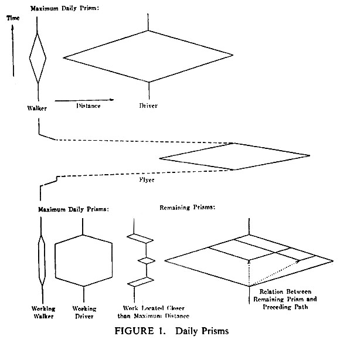

In the 1960/70s Torsten Hägerstrand established what is today know as time(-space) geography. In one of his influential papers, he illustrates the spatio-temporal action space of an individual through space-time prisms (Hägerstrand, 1970). The prisms span across a spatio-temporal coordinate-system, highlighting the space an individual can explore in a given timeframe. The area those prisms cover is influenced by so-called constraints, most importantly personal constraints. Personal constraints can be of biological nature, like age, but also as Hägerstrand says by "the tools [...] [the individuals] can command", in other words, if they, for example, use a car, bike or instead walk.
 Hägerstrand's space-time prismsHägerstrand's work presents a conceptual framework. The prisms are means of explaining this concept. But they are not built on data. The following visualisation experiments are a visual exploration of his space-time prism concept.
Hägerstrand, T. (1970). What about People in Regional Science? Regional Sciences, 24(1):7–24. Download PDF
A data-driven approach to visualising individual spatio-temporal action spaces are isochrones. The lines visualise how far an individual can (probably) go within a certain timeframe, depending on time of day and mode of transport.
When we sample those isolines for several time intervals, we can use them to build a space-time prism.
Hägerstrand's prisms assume a circular action space, which is obviously only possible if one stands in a flat empty field. For a more accurate representation, we need to map the actual distances an individual can reach. (Black indicates 100% of locations with a certain distance which can be reached in that timeframe to white 0%)
Transferring those into a mesh, we can build ourselves a nice space-time prism.
Similar to Hägerstrand's graphic at the beginning of this article, we can query more data for different transport modes and compare them. Below an example for a comparison of walking and driving a car.
The map is built using Leaflet, most of the other things are built using D3 only the mesh gradient is built by using Three.js.
All source code is available on GitHub.
The isochrones in the visualisations above are delivered through the HERE API. If you want to give it a try, they offer a free version. This project is not affiliated with HERE.
The isolines from the visualisations above are exported below as geoJSONs, one Polygon for each line and additionally the search query, stored as a point with properties.